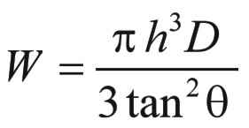

Programming in Forth is more of an "art" than programming in any other language. Like painters drawing brushstrokes, Forth programmers have complete control over where they are going and how they will get there. Charles Moore has written, "A good programmer can do a fantastic job with Forth; a bad programmer can do a disastrous job." A good Forth programmer must be conscious of "style."
Forth style is not easily taught; it's a subject that deserves a book of its own. Some elements of good Forth style include:
One good way to learn style, aside from trial and error, is to study existing Forth applications, including Forth itself. In this book we've included the definitions of many Forth system words, and we encourage you to continue this study on your own.
This chapter introduces three applications which should serve as examples of good Forth style.
The first example will show you the typical process of programming in Forth: starting out with a problem and working step-by-step towards the solution.
The second example involves a more complex application already written: you will see the use of well-factored definitions and the creation of an application-specific "language."
The third example demonstrates the way to translate a mathematical equation into a Forth definition; you will see that working with fixed-point arithmetic does not necessarily mean sacrificing speed and compactness.
The example in this section is a refinement of the buzzphrase generator we programmed back in Chap. 10. (You might want to review that version before reading this section.) The previous version did not keep track of its own carriage returns, causing us to force CRs into the definition and creating a very ragged right margin. The job of deciding how many whole words can fit on a line is a reasonable application for a computer and not a trivial one.
The problem is this: to draft a "brief" which consists of four paragraphs, each paragraph consisting of an appropriate introduction and sentence. Each sentence will consist of four randomly-chosen phrases linked together by fillers to create grammatically logical sentences and a period at the end.
The words and phrases have already been edited into the file phrases.forth. Look at this file now, without looking at wordgame.forth. (we're pretending we haven't written the application yet).
File phrases.forth defines the four introductions, compiled into the INTROS string array. The four (or more, INTROS is self-organizing) introductions must be used in sequence. The same file phrases.forth contains four sets of fillers, in FILLER. The four sets are used in sequence, but any of the three versions within a set (organized in columns) is chosen at random. Again, phrases.forth contains the three columns of buzzwords from our previous version, with some added words. We've organized the buzz words in separate 1ST-ADJECTIVE, 2ND-ADJECTIVE and NOUN string arrays.
You migh also look at at the sample output that precedes the end of this section, to get a better idea of the desired result.
"Top-down design" is a widely accepted approach to programming that can help to reduce development time. The idea is that you first study your application as a whole, then break the problem into smaller processes, then break these processes into still smaller units. Only when you know what all the units should do, and how they will connect together, do you begin to write code.
The Forth language encourages top-down design. But in Forth you can actually begin to write top-level definitions immediately. Already we can imagine that the "ultimate word" in our application might be called PAPER, and that it will probably be defined something like this:
: PAPER 4 0 DO I INTRO SENTENCE LOOP ;where INTRO uses the loop index as its argument to select the appropriate introduction. SENTENCE could be defined
: SENTENCE 4 0 DO I PHRASE LOOP ENDS ;where PHRASE uses the loop index as its argument to select the appropriate set, then chooses one of the three versions within the set. ENDS takes care of the final '.' and CR at the end of a sentence.
Using our favorite editor, we can enter these top-level definitions into wordgame.forth. Of course we can't INCLUDE this file until we have written our lower-level definitions.
In complicated applications, Forth programmers often test the logic of their top-level definitions by using "stubs" for the lower-level words. A stub is a temporary definition. It might simply print a message to let us know its been executed. Or it may do nothing at all, except resolve the reference to its name in the high-level definition.
While the top-down approach helps to organize the programming process, it isn't always feasible to code in purely top-down fashion. Usually we have to find out how certain low-level mechanisms will work before we can design the higher-level definitions.
The best compromise is to keep a perspective on the problem as a whole while looking out for low-level problems whose solutions may affect the whole application.
In our example application, we can see that it will no longer be possible to force CRs at predictable points. Instead we've got to invent a mechanism whereby the computer will perform carriage returns automatically.
The only way to solve this problem is to count every character that is typed. Before each word is typed, the application must decide whether there is room to type it on the current line or do a carriage return first.
So let's define the variable LINECOUNT to keep the count and the constant RMARGIN with the value 78, to represent the maximum count per line. Each time we type a word we will add its count to LINECOUNT. Before typing each word we will execute this phrase:
( length-of-next-word -- ) LINECOUNT @ + RMARGIN < 0= IF CRthat is, if the length of the next word added to the current length of the line exceeds our right margin, then we'll do a carriage return.
But we have another problem: how do we isolate words with a known count for each word? For now, let's assume we have available a word Split-At-Char. This word breaks strings apart, given a specific delimiter.
Let's write out a "first draft" of this low-level part of our application. It will type a single word, making appropriate calculations for carriage return.
BL Split-At-Char | Break string in two at first BL. Leaves the count on the stack, with the address of the first character underneath. |
DUP 1+ | Leaves the incremented count and a copy of the original count on the stack. |
LINECOUNT @ + | Compute how long the current line would be if a space plus the new word were to be included on it. |
RMARGIN > | Decides if it would exceed the margin. |
IF CR 0 LINECOUNT ! | If so, resets the carriage and the count. |
ELSE SPACE THEN | Otherwise, leaves a space between the words. |
DUP 1+ LINECOUNT +! | Increases the count by the length of the word to be typed, plus one for the space. |
TYPE | Types the word using the count and the address left by Split-At-Char. |
Now the problem is getting Split-At-Char to look at the strings in phrases.forth. This is handled by INCLUDED, so if we say
S" phrases.forth" INCLUDEDthen CREATE will make sure all necessary strings are compiled in memory.
To help CREATE do this, we'll define the word $". As you can see from its definition, $" compiles the string (delimited by a second quotation mark) into the dictionary, with the count in the first byte, and leaves its address on the stack for }$, }s$ and }r$. To compile the count and string into the dictionary, we simply have to execute WORD, since WORD's buffer is HERE. We get the string's address as a fillip, since WORD also leaves HERE.
All that remains is to ALLOT the appropriate number of bytes. This number is obtained by fetching the count from the first byte of the string and adding one for the count's byte.
We have written $" to compile the next string into the dictionary, but also to pile the address of this string on the stack, on top of the addresses of other strings that were compiled already just before that. In order to let other words know how many string addresses are on the stack, $" also increments the top of stack:
( 'string1 'string2 ... stringN N new_string_address -- ) SWAP 1+ ;In order to make this work for the first string $" must compile, we have the constant ${ put a 0 on the stack.
We now have ${ and $" compiling our strings for us, but at some point these addresses must be stored in the dictionary. There we can choose one of them to print, when INTRO or PHRASE need to do so. Because there is clearly work to be done both at compile and run-time, this is an ideal job for a defining word. The compile-time work is done in CREATE parts which typically look as follows:
( u -- ) DUP , ( first compile count ) 0 ?DO , LOOP ( compile u string addresses )while the run-time part is handled in DOES> parts, doing something like
DOES> ( ix body -- c-addr u ) SWAP CELLS + CELL+ @ COUNT ;This DOES> part is actually usable for }$, which has the rather simple job to deliver INTRO's string, selected by an index on the stack. Other words that need a string address want more randomness, which is easily provided by using CHOOSE (see the listing for }s$ and }r$).
Now we have a mechanism to present strings to Split-At-Char, the next question is: how do we know when we've gotten to the end of such a string?
Since we are typing word by word what Split-At-Char outputs, we only have to check whether the character count of these strings is larger than zero. Once Split-At-Char gets to the end of its input string, it starts returning empty strings.
For example, the phrase
S" Hello, I speak Forth" .PHRASEshould type out the contents of the string, word by word, performing carriage returns where necessary.
How should we structure our definition of .PHRASE? Let's re-examine what it must do:
The two part nature of this structure suggests that we need a BEGIN...WHILE...REPEAT loop. Let's write our problem this way, if only to understand it better.
... BEGIN ANOTHER? WHILE .WORD REPEAT ...ANOTHER? will do step 1; .WORD will do step 2.
How should ANOTHER? determine whether there is still a word to be typed from the string? It simply tests the top of stack to see if the string count is not yet zero, by using the phrase DUP:
: ANOTHER? DUP ; ( #chars -- TRUE=string-not-empty )The (not properly formed) flag will serve as the argument for WHILE.
How do we compute the strings for .PHRASE to work on? This is accomplished by executing one of the various children of our compiling word }$, }r$ or }s$. Thus our definition of .PHRASE might be
: .PHRASE ( c-addr u -- ) BEGIN ANOTHER? WHILE .WORD REPEAT 2DROP ;
We need the 2DROP because, when we exit the loop, we will have the final address of Split-At-Char and a zero count on the stack, neither of which we need any longer.
How do we define .WORD? Actually, we've defined it already, a few pages back. However, it pays to split .WORD up into a few other useful words, so that it looks like this:
: -FITS? linecount @ + RMARGIN > ; : SPACE' linecount @ IF SPACE 1 linecount +! THEN ; : CR' CR 0 linecount ! ; : .WORD ( addr1 #chars1 -- addr2 #chars2 ) BL Split-At-Char DUP 1+ ( space!) -FITS? IF CR' THEN SPACE' TYPE' ;
Now we have our word-typing mechanism. But let's see if we're overlooking anything. For example, consider that every time we start a new paragraph, we must remember to reset LINECOUNT to zero. Otherwise our .WORD will think that the current line is full when it isn't. We should ask ourselves this question: is there ever a case in this application where we would want to perform a CR without resetting LINECOUNT? The answer is no, by the very nature of the application. For this reason we defined
: CR' CR 0 LINECOUNT ! ;to create a version of CR that is appropriate for this application. We have used this CR in our definition of .WORD.
We should also consider our handling of spaces between words. By using the phrase
IF CR ELSE SPACE THENbefore typing each word, we guarantee that there will be a space between each pair of words on the same line but no space at the beginning of successive lines. And since we are typing a space before each word rather than after, we can place a period immediately after a word, as we must at the end of a sentence.
But there is a problem with this logic: at the beginning of a new paragraph, we will always get one space before the first word. Our solution: to redefine SPACE so that it will be sensitive to whether or not we're at the beginning of a line, and will not space if we are:
: SPACE LINECOUNT @ IF SPACE THEN ;
If LINECOUNT is "0" then we know we are at the beginning of a line, because of the way we have redefined CR.
While we are redefining SPACE, it would be logical to include the phrase
1 LINECOUNT +!
in the redefinition. Again our reasoning is that we should never perform a space without incrementing the count.
Let's assume that we have edited our definitions into wordgame.forth. Notice that we had very little typing to do, compared with the amount of thinking we've done. Forth source code tends to be concise.
Now we can define our in-between-level words -- words like INTRO and PHRASE that we have already used in our highest-level words, but which we didn't define because we didn't have the low-level mechanism.
Let's start with INTRO. The finished definition of INTRO looks like this:
: INTRO ( u -- ) CR' intros .PHRASE ;
Our mechanism has given us a very easy way to select strings. We can test this definition by itself, as follows:
0 INTRO ( or 1, 2 or 3 INTRO ) In this paper we will demonstrate that okNotice that we put the argument to INTRO on the stack first.
The way to get a FILLER phrase is a little more complicated. All of it is handled by the DOES> part of }s$. Since we are dealing with sets, not lines, and since the sets all have three strings, we must multiply the loop index for filler by 3. To pick one of the 3 versions within the set, we must choose a random number under three, add it to the index so far, convert it to cells, then add this result to the beginning of the set, taking into account the count of strings in front. We can define
... DOES> ( ix -- ) DUP @ 1- ROT - 3 * 3 CHOOSE + CELLS + CELL+ @ COUNT ;The DUP @ 1- ROT - is there because we compiled the strings in reverse order of their specification in phrases.forth, and therefore need to find the complement of the actual compiled number of strings.
Again we can test this definition by writing
3 FILLER to function as ok
The remaining words in the application are similar to their previous counterparts, stated in terms of the new mechanism.
Here is a sample of the output. (We've added REDO as an afterthought so that we'd be able to print
the same part more than once.)
In this paper we will demonstrate that by using synchronized third generation
capability balanced by qualified digital projections it becomes not
unfeasible for all but the least stand-alone organizational hardware to
function as transient undocumented mobility.
On the one hand, studies have shown that by applying available resources
towards synchronized fail-safe mobility coordinated with random context
sensitive mobility it is possible for even the most responsive management
mobility to avoid partial unilateral engineering.
On the other hand, however, practical experience indicates that with
structured deployment of stand-alone fail-safe concepts coordinated with
optimal omnirange time phasing it is possible for even the most qualified
monitored utilities to avoid optional undocumented utilities.
In summary, then, we propose that by using total incremental programming
coordinated with representative policy engineering it is possible for even
the most responsive transitional engineering to generate a high level of
compatible incremental engineering.
Our second example consists of a simple filing system. It is a moderately useful application, and a good one to learn Forth from. We have divided this section into four parts:
This computer filing system lets you store and retrieve information quicky and easily. At the moment, it is set up to handle people's names, occupations, and phone numbers. Not only does it allow you to enter, change, and remove records, it also allows you to search the file for any piece of information. For example, if your have a phone number, you can find the person's name; or, given a name, you can find the person's job, etc.
For each person there is a "record" which contains four "fields." The names which specify each of these four fields are
SURNAME GIVEN JOB PHONE
("Given," of course, refers to a person's given name, or first name.)
You can search the file for the contents of any field by using the word FIND, followed by the field-name and the contents, as in
FIND JOB newscasterDan Rather ok
If any "job" field contains the string "newscaster," then the system prints the person's full name. If no such field exists, it prints "NOT IN FILE."
Once you have found a field, the record in which it was found becomes "current." You can get the contents of any field in the current record using the word GET. For instance, having entered the line above, you can now enter
GET phone 555-9876 ok
The FIND command will only find the first instance of the field that you are looking for. To find out if there is another instance of the field that you last found, use the command ANOTHER. For example, to find another person whose "job" is "newscaster," enter
ANOTHERJessica Savitch okand
ANOTHERFrank Reynolds ok
When there are no more people whose job is "newscaster" in the file, the ANOTHER command will print "NO OTHER."
To list all the names whose field contains the string that was last found, use the command ALL:
ALL Dan Rather Jessica Savitch Frank Reynolds ok
Since the surname and given name are stored separately, you can use FIND to search the file on the basis of either one. But if you know the person's full name, you can often save time by locating both fields at once, by using the word FULLNAME. FULLNAME expects the full name to be entered with the last name first and the two names separated by a comma, as in
FULLNAME Wonder,StevieStevie Wonder ok
(There must not be a space after the comma, because the comma marks the end of the first field and the beginning of the second field.) Like FIND and ANOTHER, FULLNAME repeats the name to indicate that it has been found.
You can actually find any pair of fields by using the word PAIR. You must specify both the field names and their contents, separated by a comma. For example, to find a newscaster whose given name is Dan, enter
PAIR JOB newscaster,GIVEN DanDan Rather ok
To enter a new record, use the command ENTER, followed by the surname, given name, job, and phone, each separated by a comma only. For example,
ENTER Nureyev,Rudolf,Ballet dancer,555-1234 ok
To change the contents of a single field within the current record, use the command CHANGE followed by the name of the field, then the new string. For example,
CHANGE JOB choreographer ok
To completely remove the current record, use the command REMOVE:
REMOVE ok
This section is meant as a guide, for the novice Forth programmer, to the glossary and listing which follow. We'll describe the structure of this application and cover some of the more complicated definitions. As you read this section, study the glossary and listing on your own, and try to understand as much as you can.
Turn to the listing now. Near the end, this file contains the definitions for all nine end-user commands we've just discussed. Notice how simple these definitions are, compared to their power!
This is a characteristic of a well-designed Forth application. Notice that the word -FIND, the elemental file-search word, is factored in such a way that it can be used in the definitions of FIND, ANOTHER, and ALL, as well as in the internal word, (PAIR), which is used by PAIR and by FULLNAME.
We'll examine these definitions shortly, but first let's look at the overall structure of this application.
One of the basic characteristics of this application is that each of the four fields has a name which we can enter in order to specify the particular field. For example, the phrase
SURNAME PUTwill put the character string that follows in the input stream into the "surname" field of the current record. The phrase
SURNAME .FIELDwill print the contents of the "surname" field of the current record, etc.
There are two pieces of information that are needed to identify each field: the field's starting address relative to the beginning of a record and the length of the field.
In this application, a record is laid out like this:
| offset | 0 | 16 | 32 | 56 |
|---|---|---|---|---|
| contents | surname | given | job | phone |
| size | 16 | 16 | 24 | 8 |
For instance, the "job" field starts thirty-two bytes in from the beginning of every record and continues for twenty-four bytes.
We chose to make a record exactly sixty-four bytes long, but this system can be modified to hold records of any length and any number of fields.
To add more fields, just add lines with the length of the new field, followed by RECORD new-field-name. For example, to add a field FOO which is thirty bytes long, do30 RECORD fooetc. The system automatically computes the values of R-LENGTH and #MAXRECS.
We've taken the two pieces of information for each field and put them into a double-length table associated with each field name. This task is performed by the defining word RECORD, at compile-time. Our definition of JOB, therefore eventually executes CREATE, as in
| 3 | J | O | B |
CREATE JOB 32 , 24 ,
The literal 32 is computed by the system, which keeps track of the actual offset into a record through updating R-LENGTH.
Thus when we enter the name of a field, we are putting on the stack the address of the table that describes the "job" field. We can fetch either or both pieces of information relative to this address.
Let's call each of these entries a "field specifying table," or a "spec table" for short.
Part of the design for this application is derived from the requirements of FIND, ANOTHER, and ALL; that is, FIND not only has to find a given string within a given type of field, but also needs to "remember" the string and the type of field so that ANOTHER and ALL can search for the same thing.
We can specify the kind of field with just one value, the address of the spec table for that type of field. This means that we can "remember" the type of field by storing this address into KEEP.
KIND was created for this purpose, to indicate the "kind" of field.
To remember the string, we have defined a buffer called WHAT to which the string can be moved.
The word KEEP serves the dual purpose of storing the given field type into KIND and the given character string into WHAT. If you look at the definition of the end-user word FIND, you will see that the first thing it does is KEEP the information on what is being searched for. Then FIND executes the internal word -FIND, which uses the information in KIND and WHAT to find a matching string.
ANOTHER and ALL also use -FIND, but they don't use KEEP. Instead they look for fields that match the one most recently "kept" by FIND.
So that we can GET any piece of information from the record we have just "found," we need a pointer to the "current" record. This need is met by the value #RECORD. The operations of the words SET, TOP and DOWN should be fairly obvious to you.
The word RECORD@ uses its stack parameter to compute the absolute address (the computer-memory address, somewhere in the disk buffer) of the beginning of the current record. RECORD@ also makes sure that the record really is in the disk buffer.
While a spec table contains the relative address of the field and its length, we usually need to know the field's absolute address and length for words such as TYPE, MOVE, and PARSE. Look at the definition of the word FIELD to see how it converts the address of a spec table into an absolute address and length. Then examine how FIELD is applied in the definition of .FIELD.
The word PUT also employs FIELD. Its phrase
>R KBD, R> >FLD_leaves on the stack the arguments
addr-of-string count-of-string absolute-addr-of-field size-of-fieldfor MOVE to move the string into the appropriate field of the current record. Before we move the string, we fill the field with spaces, to blank possible old contents. Also, we make sure the length of the moved string is not larger than the size of the field.
There are two things worth noting about the definition of FREE. The first is the method used to determine whether the record is empty. We've made the assumption that if the first byte of a record is empty, then the whole record is empty, because of the way ENTER works. If the first byte contains a character whose ASCII value is less than or equal to BL, then it is not a printing character and the line is empty. As soon as an empty record is found, LEAVE ends the loop. #RECORD will contain the number of the free record.
Another thing worth noting about FREE is that it aborts if the file is full, that is, if it runs through all the records without finding one empty. We can use a DO loop to run through all the records, but how can we tell that the loop has run out before it has found an empty record?
The best way is to leave a TRUE on the stack, to serve as a flag, before beginning the loop. If an empty record is found, we can change the flag to FALSE (with the word INVERT) before we leave the loop. When we come out of the loop, we'll have a TRUE if we never found an empty record, a FALSE if we did. This flag will be the argument for ABORT".
We use a similar technique in the definition of -FIND. -FIND must return a flag to the word that executed it: FIND, ANOTHER, ALL or (PAIR). The flag indicates whether a match was found before the end of the file was reached. Each of these outer words needs to make a different decision based on the state of this flag. This flag is TRUE if a match is not found (hence the name -FIND). The decision to use negative logic was based on the way -FIND is used.
Because the flag needs to be TRUE if a match is not found, the easiest way to design this word is to start with a TRUE on the stack and change it to a FALSE only if a match is found.
Now that you understand the basic design of this application, you should have no trouble understanding the rest of the listing, using the glossary as a guide.
| /CR | A constant that defines the length in bytes of a newline sequence. |
| #MAXRECS | A constant that defines the maximum number of records in the data file. To increase this number, add lines containing R-LENGTH spaces, followed by a newline, to the data file. |
| FILE | A value that holds the handle of the file containing the data. |
| KIND | A value that contains the address of the field-specifying table for the type of field that was last searched for by FIND. |
| R-LENGTH | A value that contains the length in bytes of a single record. |
| #RECORD | A value that points to the current record. |
| RECORD | A defining word to create field-specifying tables. Takes the field width in bytes as a parameter and updates R-LENGTH. All uses of RECORD should happen before #MAXRECS is defined. Usage: 10 RECORD foo |
| SURNAME | Returns the address of the field-specifying table for the "surname" (last name) field. |
| GIVEN | Returns the address of the field-specifying table for the "given" (first name) field. |
| JOB | Returns the address of the field-specifying table for the "job" field. |
| PHONE | Returns the address of the field-specifying table for the "phone" field. |
| WHAT | Returns the address of a buffer that contains the string that is being searched for, or was last searched for, by FIND. |
| RBUF | Returns the address of a buffer that contains the current record data. |
| FLUSH | Makes sure all changed data is committed to disk, but does not close the file. |
| UPDATE | Writes the data for the current record to disk. |
| RECORD@ | Insures that the specified record is in RBUF. |
| >FLD_ | Given the address of a field-specifying table, returns the address of the associated field in RBUF, along with its assigned length. |
| >FLD | Given the address of a field-specifying table, returns the address of the associated field in RBUF, along with its actual length. |
| FIELD | Insures that the associated field in the current record is in a disk buffer and returns the address of the field in the buffer along with its actual length. |
| .FIELD | From the current record, types the contents of the field that is associated with the field-specifying table at addr. |
| SET | Sets the record pointer to the specified record. |
| TOP | Resets the record pointer to the top of the file. |
| DOWN | Moves the record pointer down one record. |
| .NAME | Prints the full name found in the current record. |
| READ | Moves a character string, delimited by a comma or by a carriage return, from the input stream to a temporary buffer, then returns its address and count. |
| PUT | Moves a character string, delimited by a comma or by a carriage return, from the input stream into the field whose field-specifying table address is given on the stack. |
| KEEP | Moves a character string, delimited by a comma or by a carriage return, from the input stream into WHAT, and saves the address of the given field in KIND, for future use by -FIND. |
| FREE | Starting at the top of the file, finds the first record that is free, that is, whose count is zero. Aborts if the file is full. |
| -FIND | Beginning at #record and proceeding down, compares the contents of the field indicated by KIND against the contents of WHAT. |
| (PAIR) | Starting from the top, attempts to find a match on the contents of WHAT, using KIND to indicate the type of field. If a match is made, then attempts to match a second field, whose type is indicated by "field", with the contents {c-addr u}. If both match, prints the name; otherwise repeats until a match is made or until the end of the file is reached, in which case prints an error message. |
| ENTER | Finds the first free record, then moves four strings delimited by commas into the
surname, given, job and phone fields of that record. Usage: ENTER lastname,firstname,job,phone |
| REMOVE | Erases the current record. |
| CHANGE | Changes the contents of the given field in the current record. Usage: CHANGE field-name new-contents |
| GET | Prints the contents of the given type of field from the current record. Usage: GET field-name |
| FIND | Finds the record in which there is a match between the contents of the given field
and the given string. Usage: FIND field-name string |
| ANOTHER | Beginning with the next record after the current one, and using KIND to determine type of field, attempts to find a match on WHAT. If successful, types the name; otherwise an error message. |
| ALL | Beginning at the top of the file, uses KIND to determine type of field and finds all matches on WHAT. Types the full name(s). |
| PAIR | Finds the record in which there is a match between both the contents of the first
given field and the first given string, and also the contents of the second given
field and the second given string. Comma is delimiter. Usage: PAIR field1 string1,field2 string2 |
| FULLNAME | Finds the record in which there is a match on both the first and last names given. Usage: FULLNAME lastname,firstname |
Our final example is a math problem which many people would assume could only be solved by using floating point. It will illustrate how to handle a fairly complicated equation with fixed-point arithmetic and demonstrate that for all the advantages of using fixed-point, range and precision need not suffer. Of course, when the hardware does have floating point one should preferably use that instead, and we show how to do that, too. Using fixed-point has the slight disadvantage that, in order to correctly compute scale factors, we have to know our Forth's number of bits per cell. For modern Forths the number of bits per cell can be 16, 32, 64, or even higher. In order not to complicate the following description too much, we will assume 16-bit hardware. That is probably the only environment this example will be useful for, anyway. Also, we'll assume 1 CHARS is equivalent to one byte.
In this example we will compute the weight of a cone-shaped pile of material, knowing the height of the pile, the angle of the slope of the pile, and the density of the material.
To make the example more "concrete," let's weigh several huge piles of sand, gravel, and cement. The slope of each pile, called the "angle of repose," depends on the type of material. For example, sand piles itself more steeply than gravel.
Here is the formula for computing the weight of a conical pile h feet tall with an angle of repose of theta degrees, where D is the density of the material in pounds per cubic foot:
|
The volume of a cone, V, is given by , where b is the radius of the base and h is the height. We can compute the base by knowing the angle or, more specifically, the tangent of the angle. The tangent of an angle is simply the ratio of the segment marked h to the segment marked b in this drawing: If we call this angle "theta", then . Thus we can compute the radius of the base with . When we substitute this into the expression for V, and then multiply the result by the density D in pounds per cubic foot, we get the formula shown in the text. |
.
This will be the formula which we must express in Forth.
Let's design our application so that we can enter the name of a material first, such as
DRY-SANDthen enter the height of a pile and get the result for dry sand.
Let's assume that for any one type of material the density and angle of repose never vary. We can store both of these values for each type of material into a table. Since we ultimately need each angle's tangent, rather than the number of degrees, we will store the tangent. For instance, the angle of repose for a pile of cement is 35o, for which the tangent is .700. We will store this as the integer 700.
Bear in mind that our goal is not just to get an answer; we are programming a computer or device to get the answer for us in the fastest, most efficient, and most accurate way possible. As we indicated in Chap. 5, to write equations using fixed-point arithmetic requires an extra amount of thought. But on hardware that would have to emulate floating point, the effort pays off in two ways:
Let's approach our problem by first considering scale. The height of our piles ranges from 5 to 50 feet. By working out our equation for a pile of cement 50 feet high, we find that the weight will be nearly 3,500,000 pounds.
But because our piles will not be shaped as perfect cones and because our values are averages, we cannot expect better than four or five decimal places of accuracy. If we scale our result to tons, we get about 17,500. This value will comfortably fit within the range of a single-length number, even on 16-bit hardware. For this reason, let's write this application entirely with single-length arithmetic operators. (Although we will assume 16-bit hardware in the following, the code as shown will run unmodified on any ANS Forth.)
Applications which require greater accuracy can be written using double-length arithmetic; to illustrate we've even written a second version of this application using double-length math, as you'll see later on. But we intend to show the accuracy that Forth can achieve even with 16-bit math.
By running another test with a pile 40 feet high, we find that a difference of one-tenth of a foot in height can make a difference of 25 tons in weight. So we decide to scale our input to feet and inches rather than merely to whole feet.
We'd like the user to be able to enter
15 FOOT 2 INCH PILEwhere the words FOOT and INCH will convert the feet and inches into tenths of an inch, and PILE will do the calculation. Here's how we might define FOOT and INCH:
: FOOT 10 * ; : INCH 100 12 */ 5 + 10 / + ;The use of INCH is optional.
(By the way, we could as easily have designed input to be in tenths of an inch with a decimal point, like this:
15.2In this case, NUMBER would convert the input as a double-length value. Since we are only doing single-length arithmetic, PILE could simply begin with DROP, to eliminate the high-order cell.)
In writing the definition of PILE, we must try to maintain the maximum number of places of precision without overflowing 15 bits. According to the formula, the first thing we must do is cube the argument. But let's remember that we will have an argument which may be as high as 50 feet, which will be 500 as a scaled integer. Even to square 500 produces 250,000, which exceeds the capacity of single-length arithmetic using 16-bit cells.
We might reason that, sooner or later in this calculation, we're going to have to divide by 2000 to yield an answer in tons. Thus the phrase
DUP DUP 2000 */will square the argument and convert it to tons at the same time, taking advantage of */'s double-length intermediate result. Using 500 as our test argument, the above phrase will yield 125.
But our pile may be as small as 5 feet, which when squared is only 25. To divide by 2000 would produce a zero in integer arithmetic, which suggests that we are scaling down too much.
To retain the maximum accuracy, we should scale down no more than necessary. 250,000 can be safely accomodated by dividing by 10. Thus we will begin our definition of PILE with the phrase
DUP DUP 10 */The integer result at this stage will be scaled to one place to the right of the decimal point (25000 for 2500.0).
Now we must cube the argument. Once again, straight multiplication will produce a double-length 32-bits result, so we must use */ to scale down. We find that by using 1000 as our divisor, we can stay just within single-length range. Our result at this stage will be scaled to one place to the left of the decimal point (12500 for 125000.) and still be accurate to 5 digits.
According to our formula, we must multiply our argument by pi. We know that we can do this in Forth with the phrase
355 113 */which causes no problems with scaling.
Next we must divide our argument by the tangent squared, which we can do by dividing the argument by the tangent twice. Because our tangent is scaled to three decimal places, to divide by the tangent we multiply by 1000 and divide by the table value. Thus we will use the phrase
1000 TAN(THETA) */
Since we must perform this twice, let's make it a definition, called /TAN (for divide-by-the-tangent) and use the word /TAN twice in our definition of PILE. Our result at this point will be scaled to one place to the left of the decimal (26711 for 267110, using our maximum test values).
All that remains is to multiply by the density of the material, of which the highest is 131 pounds per cubic foot. To avoid overflowing, let's try scaling down by two decimal places with the phrase
DENSITY 100 */
But by testing, we find that the result at this point for a 50-foot pile of cement will be 34,991, which just exceeds the 15-bit limit. Now is a good time to take the 2000 into account. Instead of
DENSITY 100 */we can say
DENSITY 200 */and our answer will now be scaled to whole tons.
You will find this version in the listing. As we mentioned, we have also written this application using double-length arithmetic. In this version you enter the height as a double-length number scaled to tenths of a foot, followed by the word FEET, as in 50.0 feet.
By using double-length integer arithmetic, we are able to compute the weight of the pile to the nearest whole pound. The range of double-length 32-bit integer arithmetic compares with that of single-precision floating-point arithmetic. Below is a comparison of the results obtained using a 10-decimal-digit pocket calculator, single-length Forth, double-length (32-bit) Forth, and floating-point Forth. The test assumes a 50-foot pile of cement, using the table values.
| in pounds | in tons | |
|---|---|---|
| calculator | 34,995,633 | 17,497.816 |
| Forth 16-bit single-length | --- | 17,495 |
| Forth 16-bit double-length | 34,995,634 | 17,497.817 |
| Forth 32-bit single-length | --- | 17,495 |
| Forth 32-bit double-length | 34,995,634 | 17,497.817 |
| Forth floating-point | 34,995,633 | 17,497.816 |
Here's an example of our application's output:
S" spiles.forth" INCLUDED ok cement ok 10 foot pile = 138 tons of cement ok 10 foot 3 inch pile = 151 tons of cement ok dry-sand ok 10 foot pile = 81 tons of dry sand ok S" dpiles.forth" INCLUDED cement ok 10.0 feet = 279939 pounds of cement or 139.969 tons ok S" fpiles.forth" INCLUDED cement ok 10e feet = 279965.06373598 pounds, or 139.98253187 tons of cement ok
The defining word MATERIAL takes three arguments for each material, one of which is the address of a string. .SUBSTANCE uses this address to type the name of the material.
To put the string in the dictionary and to give an address to MATERIAL, we have defined a word called ". As you can see from its definition, " compiles the string (delimited by a second quotation mark) into the dictionary, with the count in the first byte, and leaves its address on the stack for MATERIAL. To compile the count and string into the dictionary, we simply have to execute WORD, since WORD's buffer is HERE. We get the string's address as a fillip, since WORD also leaves HERE.
All that remains is to ALLOT the appropriate number of bytes. This number is obtained by fetching the count from the first byte of the string and adding one for the count's byte.
This interface is Forth system dependent. It will work for iForth 2.0, after some preparations:
| Stub | in Forth, a temporary definition created solely to allow testing of a higher-level definition. |
| Top-down Programming | a programming methodology by which a large application is divided into smaller units, which may be further subdivided as necessary. The design process starts with the overview, or "top," and proceeds down to the lowest level of detail. Coding of the low-level units begins only after the entire structure of the application has been designed. |